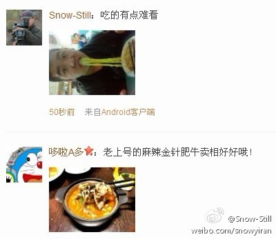

不晓得去参加3月25号天然气涨价会的那几个哈尔滨“市民代表”是真傻屄还是托，六天，就要实行了，2块钱涨到两块八，这帮傻屄啊··收了多少好处，是终身免费使用天然气还是你们死了用天然气给你们火化啊~祝参加哈尔滨天然气涨价会的那些人的家里做饭时天然气不爆炸、上街不被车撞、生孩子都有屁眼。。。
为啥呢？@冰城一道:分享图片同样是生活，差距怎么就那么大呢？？？？？伤不起 真的伤不起 啊@Vermouth小苦 @哆啦A多 @狐誩狐語 @王鑫Mcrazy @王33_JQ @早行远客-刘艳娇 @黑淇豆豆 @盛世光芒 @oO天玲珑Oo @吕传煦 @leju_于暖暖 